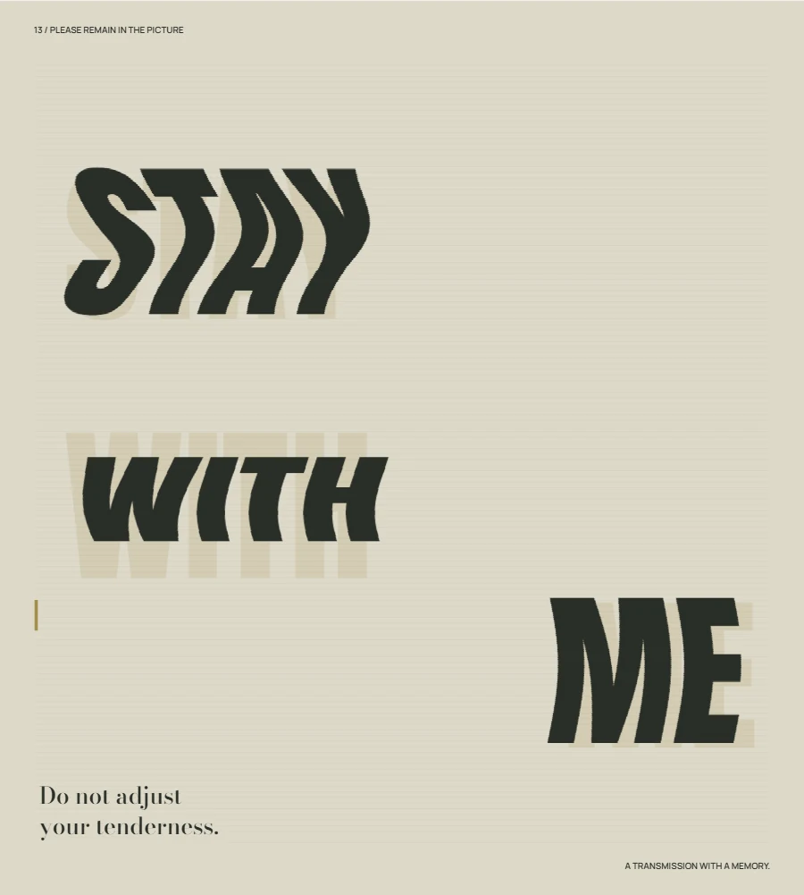
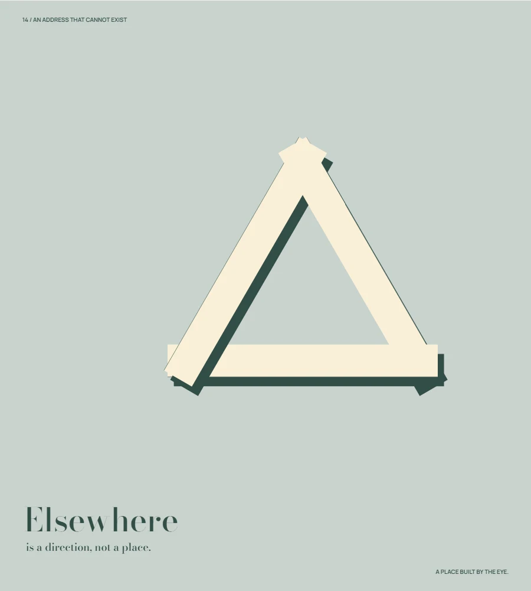
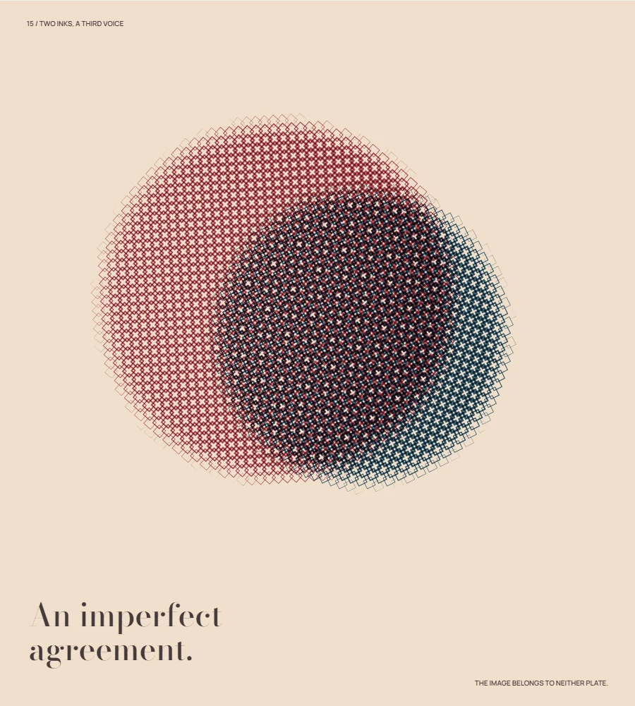
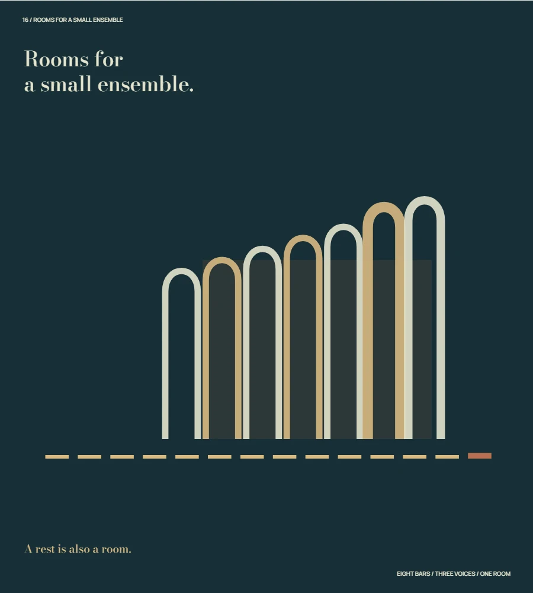
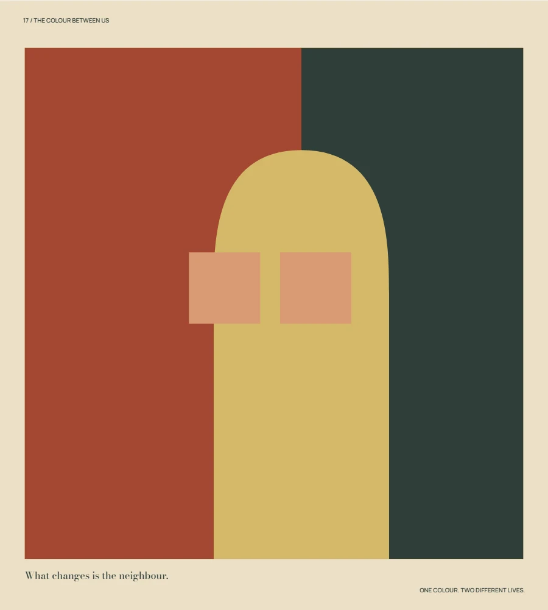
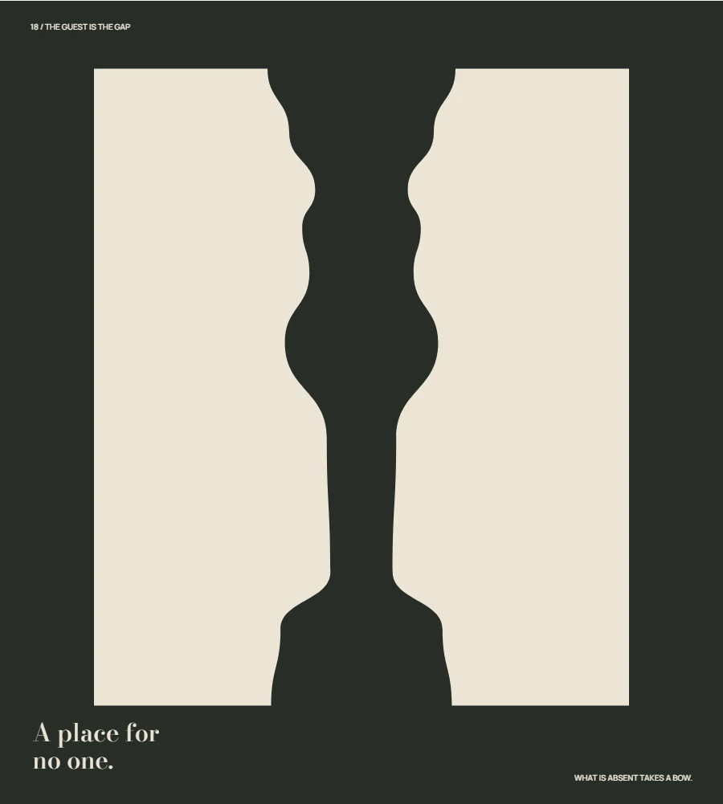

Seeing is
a kind of fiction.
Six propositions about an unreliable eye. Signal, space, print, music, colour and absence become instruments of perception.
觀看不是接收答案，而是不斷重新理解。六件關於訊號、空間、印刷、聲部、色域與留白的動態海報。
Explore 13—18 ↓The Illusion of PerceptionSix perceptual propositions / 2026
13 / Analog signal16″

Please remain in the picture
A transmission tries to hold a sentence together. Its errors turn the space between words into a second message.Canvas / deterministic signal displacement
14 / Impossible geometry16″

An address that cannot exist
Three convincing fragments of space refuse to agree on what is in front. The eye keeps building an address that geometry cannot inhabit.Canvas / contradictory depth and masks
15 / Halftone alchemy18″

Two inks, a third voice
Two plates meet imperfectly. The image that emerges belongs to neither ink alone.Canvas / spot-colour screen printing
16 / Sound architecture16″

Rooms for a small ensemble
A small ensemble builds a room one note at a time. Rhythm lays the floor, melody raises the arches, and harmony decides how much air remains.Canvas / original score + Web Audio
17 / Chromatic metamorphosis16″

The colour between us
The same colour lives two different lives. Its neighbours, its territory and the edge it shares decide which one we see.Canvas / hard-edge colour relations
18 / Negative space theatre14″

The guest is the gap
Two figures leave a place for someone who never arrives. That absence becomes a vessel, a doorway, and finally the figure itself.Canvas / complementary silhouette masks